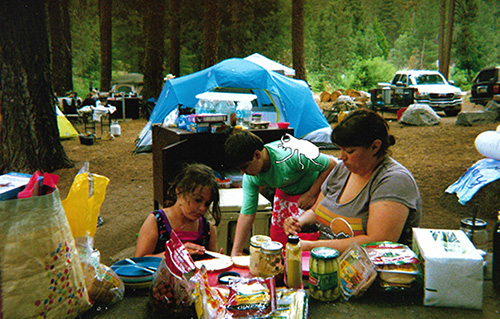

picnic time!
shortly after this photo was taken, a giant rhino beetle landed on my brother's shirt. we think it was because of how brightly colored he was. he was technically in his bathing suit because we were getting ready to go to the lake. beside him is my little cousin and my aunt. when the beetle landed on him, no one dared to move. only when it started crawling up his shoulder did someone gently poke it and we watched it fly away.
